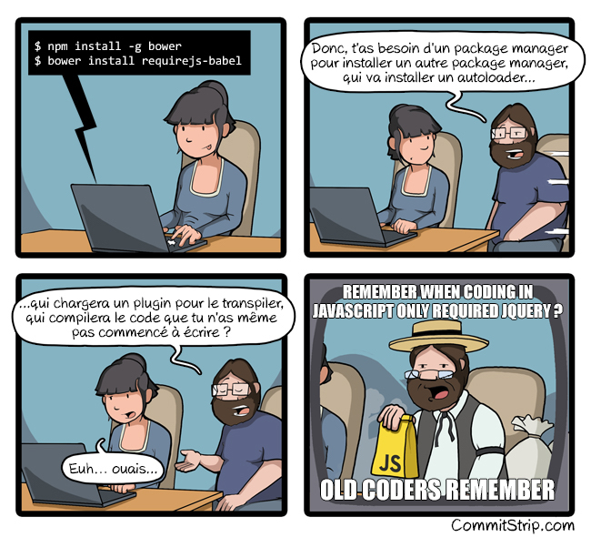

DAVIN Kevin

- Full-stack² Dev
- Agile Addict !
- Main committer on AngularJS's lib
- Angular, Java and other tech Former
Summary
JavaScript Fatigue
Everything is more complex
- Multi-module framework
- External Dependencies
- Minify code, concat, cache-busting...
- Unit and E2E testing
We also want to simplify our work !
- ES2015 specification
- ES2016 , ES2017 , 2018 , 19...
- TypeScript
Our work is done only when it's delivered !
- Send to Ops-Team
- or in stage env
- or in the cloud
- or anywhere you want...
After this, our job is (finally) done !
What are our tools ?
GruntJS
GruntJS
First commit : 21 September 2011
# of plugin : 5,887
GruntJS - Config
grunt.initConfig({
uglify: {
build: {
src: 'js/reveal.js',
dest: 'js/reveal.min.js'
}
},
sass: {
core: {
files: {
'css/reveal.css': 'css/reveal.scss',
'css/custom.css': 'css/custom.scss'
}
}
}});GulpJS
GulpJS
First commit : 4 July 2013
# of plugin : 2,637
GulpJS - Config
gulp.task('build:js', () =>
gulp.src('js/reveal.js')
.pipe(uglify())
...
.pipe(gulp.dest('js/reveal.min.js'))
);
gulp.task('build:css', () =>
gulp.src(['css/reveal.scss', 'css/custom.scss'])
.pipe(sass())
...
.pipe(gulp.dest('css/'))
);Webpack
Webpack
First commit : 10 March 2012
# of plugin : ???
Webpack - Config
module.exports = {
entry: { index: [ "./src/index.js", ], },
output: { path: path.join(__dirname, "dist"), filename: "[name].js", publicPath: "/", },
resolve: { extensions: [ "", ".js", ".json", ], },
module: {
loaders: [
{ test: /\.js$/, loaders: [ "babel", "eslint"] },
{ test: /\.scss$/, loaders: ["style", "css", "sass"] }
],
},
plugins: [
new ExtractTextPlugin("[name].css", {disable: !production}), new webpack.DefinePlugin({ __PROD__: production })
],
sassLoader: { includePaths: [path.resolve(__dirname, "./some-folder")] }
}JSPM
JSPM
First commit : 16 September 2013
# of plugin : ...
JSPM - Config
$ jspm init
$ jspm install angularjsEmber CLI
Ember CLI
First commit : 3 November 2013
Version of Ember at this time : 1.1.2
How to use it ?
$ npm install -g ember-cli
$ ember new ember-quickstart
$ cd ember-quickstart
$ ember serverThank you Ember team !
Let's try the Angular CLI !

Disclaimer
The best way to talk about the cli...
is by using it !
Demo Time !
Structure the project
├── README.md
├── angular-cli.json
├── e2e
│ ├── app.e2e-spec.ts
│ ├── app.po.ts
│ └── tsconfig.json
├── karma.conf.js
├── package.json
├── protractor.conf.js
├── src
│ ├── app
│ │ ├── app.component.html
│ │ ├── app.component.sass
│ │ ├── app.component.spec.ts
│ │ ├── app.component.ts
│ │ ├── app.module.ts
│ │ ├── index.ts
│ │ └── shared
│ │ └── index.ts
│ ├── environments
│ │ ├── environment.prod.ts
│ │ └── environment.ts
│ ├── favicon.ico
│ ├── index.html
│ ├── main.ts
│ ├── polyfills.ts
│ ├── styles.sass
│ ├── test.ts
│ ├── tsconfig.json
│ └── typings.d.ts
└── tslint.jsonAny drawback ?
4,0K angular-cli.json
12K e2e
4,0K karma.conf.js
322M node_modules
4,0K package.json
4,0K protractor.conf.js
4,0K README.md
64K src
4,0K tslint.jsonAny drawback ?
Some important point are still under discussion
A lot of helping tools built-in
ng serve ng doc componentng lintAnd my config ?
All the static data should be inside angular-cli.json
but now, we don't have access to underlying build tools...
What's next ?
Language
Now, it only supports TypeScript
Will support Javascript, ES201X, Dart or more
Add-ons
Make the CLI extensible for 3rd party plug-in
Static analysis of code
Codelyzer : Linting & perf analysis for Angular2
Help to upgrade between versions or coding style
Publish
The deployment system could be integrated to the CLI